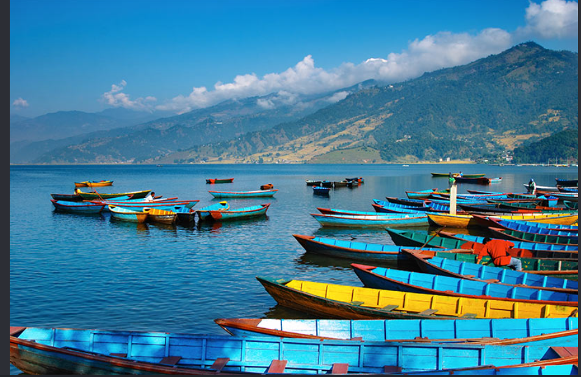

Pokhara once lay on the important trade route between India and Tibet. To this day, mule trains set up camps on the city outskirts, bringing goods from remote Himalayan regions including Mustang.
Pokhara’s tranquil beauty has been the subject of inspiration for many travel writers. Its pristine air, spectacular backdrop of snowy peaks, blue lakes and surrounding greenery make it ‘the jewel in the Himalaya’, a place of remarkable natural disposition. With the magnificent Annapurna range forming the backdrop and the serenity of the Cluster of 9 Lakes with three major ones - Phewa, Rupa and Begnas – Pokhara is a great destination for a weekend getaway as well as a long relaxing holiday. Pokhara Valley, gateway to the Annapurna region where many a trekker finds his Shangri-la, sits high on the list of ‘must visit’ places in Nepal.

Click here to know more about pokhora